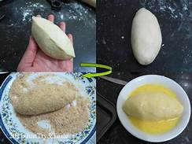
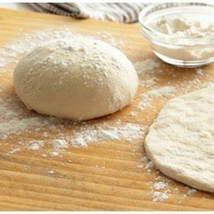

Bahan-Bahan
- 250 gram tepung terigu
- 1 butir telur
- 3sdm margarin, lelehkan
- 100ml air hangat
- 2sdm susu bubuk optional
- 1/2sdt garam
- margarin untuk olesan
- minyak untuk merendam
Langkah-Langkah
- Campur semua bahan roti jadi satu
- Uleni sampai kalis(aku pakai tangan) jangan takut adonan lengket ya, lumuri sesekali dengan tepung 
- kalisnya adonann canai tidak sekalis adonan roti ya, 